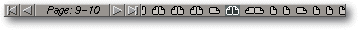

<!-- Documentation Xclamation (c)1994-2000 AXENE contact axene@axene.org>
<html>
<head>
<title>Gestionnaire de pages</title>
</head>

<body BGCOLOR="#FFFFFF" BACKGROUND="Images/back.gif" TEXT="#000000">
<p ALIGN="right">

<p>
<br>
<br>
Le gestionnaire de pages affiche de façon symbolique toutes les
pages d'un document et permet d'accéder directement à l'une
de ces pages. A partir des icônes de représentation
des pages, il est possible d'ouvrir le 
<a HREF="Menu_Context.html#cm_pager">menu contextuel</a> du gestionnaire
de pages.
<br>
<br>
<hr>
<br>
<center>

<br>
<i><small>
Photo d'écran&nbsp;: Gestionnaire de pages
</i></small>
</center><p>
<br>
<hr>
<br>
<p>
<h3>Partie gauche du gestionnaire de pages&nbsp;:</h3>
<ul>
  <li>
     le premier bouton icône
     permet de <b>sélectionner la première
     page</b> du document.
     <p>
  <li>
     le second bouton icône
     permet de <b>sélectionner la page précédente</b>
     par rapport
     à la page actuellement affichée. Si la partie droite
     du gestionnaire de pages n'est pas assez large pour représenter
     les symboles de toutes les pages du document, une pression
     prolongée
     sur cette icône permet de faire défiler les pages
     vers la droite. Ceci rend accessible les pages qui
     précèdent la première page représentée.
     <p>
  <li>le texte d'information &quot;Page: X&quot; (ou &quot;Page:
     X-X+1 dans le cas d'une double page)&quot; où X est un numéro de page, permet de
     <b>connaître le numéro de la page actuellement affichée</b>.
     Si on promène le pointeur de la souris sur la partie droite
     du gestionnaire de pages, le numéro de la page pointée
     apparaît en blanc.
     <p>
  <li>
     le troisième bouton
     icône permet de <b>sélectionner la page suivante</b> par rapport à
     la page actuellement affichée. Si la partie droite du gestionnaire
     de pages n'est pas assez longue pour représenter les symboles de
     toutes les pages du document, une pression prolongée sur
     cette icône permet de faire défiler les pages vers
     la gauche. Ceci rend accessible les pages qui suivent la dernière
     page représentée.
     <p>
  <li>
     le dernier bouton icône
     permet de <b>sélectionner la dernière
     page</b> du document.
</ul>

<p>
<br>
<h3>Partie droite du gestionnaire de pages&nbsp;:</h3>
Elle contient une <b>représentation symbolique des pages du
document</b>. La forme de l'icône associée à chaque
page varie en fonction du style de la page&nbsp;: page gauche, page droite
ou double page, en combinaison avec l'orientation portrait ou
paysage. 
<p>
Si l'on clique avec le bouton gauche de la souris sur l'une des icônes,
la page correspondante est sélectionnée et affichée
dans le plan d'affichage, son numéro apparaît dans
le texte d'information de la partie gauche.
<p>
Un clic avec le bouton droit de la souris provoque l'ouverture d'un 
<a HREF="Menu_Context.html#cm_pager">menu contextuel</a>
permettant l'ajout, la suppression ou la modification d'une page.
<p>
<br>
<hr>
<p ALIGN="right">
<p>
</body>
</html>


